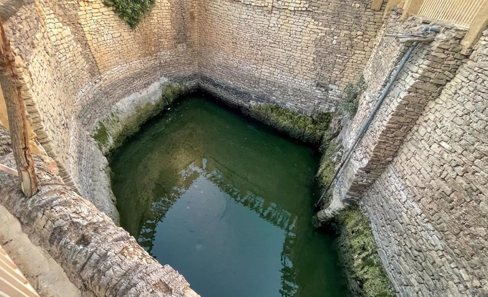

Explore two of Saudi Arabia's most historic and scenic locations. From the majestic Ajā & Salma Mountains to the ancient Bir Hadaj well, each destination reflects the Kingdom’s rich heritage and natural beauty.
Ajā & Salma Mountains – Hail
Ajā and Salma are twin mountains west of Hail city in northwest Saudi Arabia, the highest peaks of the Najd plateau (1544m for Ajā, 1430m for Salma). Surrounded by the Nafud desert and red granite rocks, the mountains feature green valleys and oases with Talh and Sidr trees, creating a natural scenic masterpiece.
Their names are derived from a tragic pre-Islamic love story preserved in the popular heritage of Hail. A young man named Ajā deeply loved a girl named Salma, but tribal customs and family rejection prevented their marriage. They tried to escape together , but their pursuers caught up with them in the area between the two mountains. So they crucified Ajā on the western mountain and crucified Salma on the eastern mountain, then each mountain was named after the one who was crucified on it, and they became Jabal Ajā and Jabal Salma to this day.
Best Time to Visit
Winter (December–February) for cool weather and green scenery after rains, or spring (March–April) to enjoy wildflowers and blooming Talh trees. Perfect for hiking, photography, and family trips.
Famous Local Dishes
Traditional Hail dishes include Kabsa with lamb, Jareesh with ghee and dates, Arabic coffee with cardamom and fresh dates, and Haneeth (slow-cooked meat with spices).
Prominent Plants
- Talh (Acacia) trees: Provide shade and dense green views.
- Sidr trees: Aromatic leaves and fruits used in traditional medicine and honey production.
- Wild herbs and seasonal flowers: Including mountain thyme and wild basil.
These mountains offer light hiking, 360° valley views, camping under the stars, and stunning sunsets. A perfect destination combining adventure, tranquility, and heritage – ideal for families, nature lovers, and photographers seeking unforgettable images.


Bir Hadaj – Tayma (Tabuk Region)
Bir Hadaj is located in the north of Tayma in the Tabuk Region, about 265 km from Tabuk city. It is one of the oldest and largest wells in the Arabian Peninsula, and a prominent historical and heritage landmark in Saudi Arabia. Known as the "Sheikh of Air" for its vast size and generous water supply, it is surrounded by palm trees on all sides, creating a stunning landscape combining natural beauty and ancient heritage.
History & Significance
The well dates back to the mid-6th century BCE during the Babylonian occupation of Tayma, attributed to King Nabonidus who lived in Tayma for ten years. It was buried and restored several times due to earthquakes and floods. In the modern era, King Saud bin Abdulaziz visited in 1954 and ordered modern pumps to be installed. In 2012, a comprehensive restoration project returned it to its historical grandeur.
Specifications
The well's circumference is 65 meters, with a depth between 11 and 12 meters. Constructed from polished stones, it contains 31 stone channels distributing water, still flowing today to irrigate camels, farms, and nomadic tribes.
Best Time to Visit
Winter and spring (December to April) are ideal when the weather is mild and the area is green after rains, perfect for sightseeing and photography.
Famous Local Dish
Al-Majalala: A traditional dish from Tayma, made with slow-cooked meat, spices, and vegetables, served with bread or rice – a taste reflecting the region's hospitality.
Prominent Plants
- Palm trees: Surround the well and produce high-quality dates.
- Desert shrubs and wild plants: Flourish after rainfall.
